El grillo de Chirptenna VNA
Variantes generadas con node img/generar_variantes.mjs a partir de grillo.svg. 23 ilustraciones.
Niveles de ROE (modo Simple)
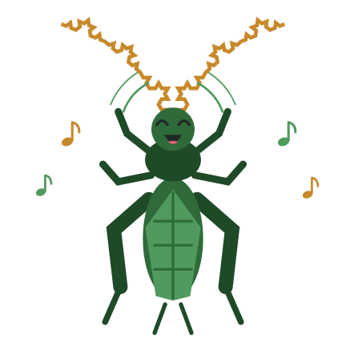
ROE 1–1,5 · Muy bien acoplada
Resultado «Muy bien acoplada»: el grillo canta contento
roe-muy-bien.svg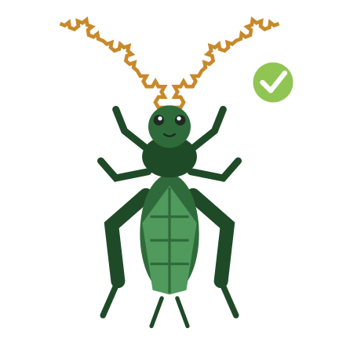
ROE 1,5–2 · Aceptable
Resultado «Aceptable»: tranquilo, todo en orden
roe-aceptable.svg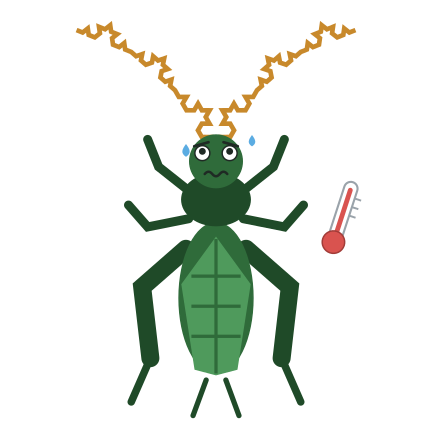
ROE 2–3 · Mejorable
Resultado «Mejorable»: preocupado, con un termómetro
roe-mejorable.svg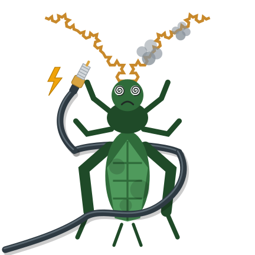
3 · Mal acoplada">ROE > 3 · Mal acoplada
Resultado «Mal acoplada»: enredado, chamuscado y con humo
roe-mal.svgCalibración OSL
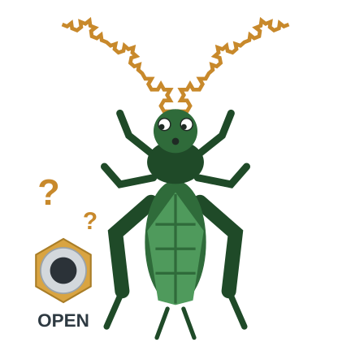
OPEN · conector abierto
Paso «OPEN» del asistente de calibración
osl-open.svg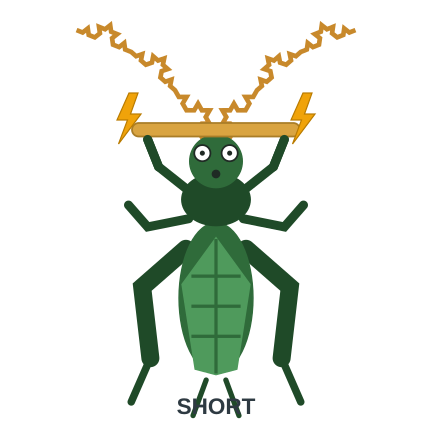
SHORT · cortocircuito
Paso «SHORT» del asistente de calibración
osl-short.svg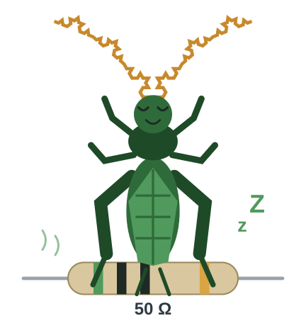
LOAD · 50 Ω
Paso «LOAD» del asistente de calibración
osl-load.svg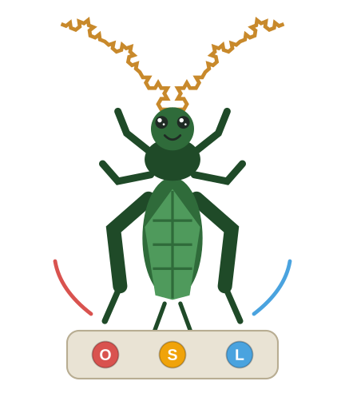
Calibración por tramos
Calibrar «a cachos»: un tramo con cada juego de patrones
osl-tramos.svgPantallas de estado
 Conecta tu NanoVNA
Conecta tu NanoVNA
Pantalla vacía: antes de conectar el equipo (la imagen del README)
estado-conecta.svg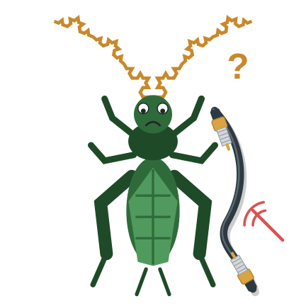
Equipo desconectado
Se perdió la conexión: el cable cuelga suelto
estado-desconectado.svg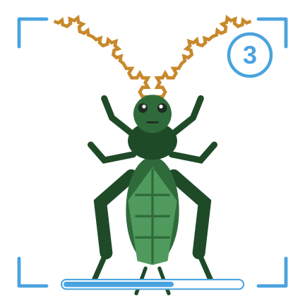
Midiendo… no muevas el cable
Barrido en curso: el grillo quieto como una estatua
estado-midiendo.svg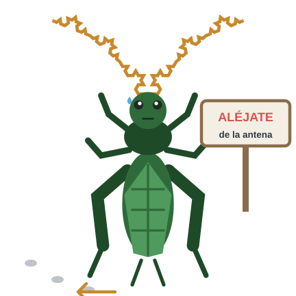
Aléjate de la antena
Cuenta atrás antes de medir: el grillo se aparta
estado-alejate.svg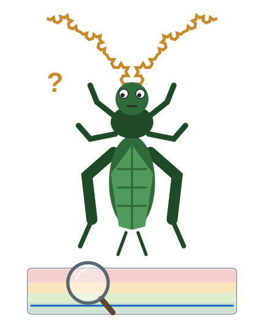
Sin resonancia en el rango
No se ve ningún mínimo: el grillo busca con una lupa
estado-sin-resonancia.svgTipos de usuario y de antena
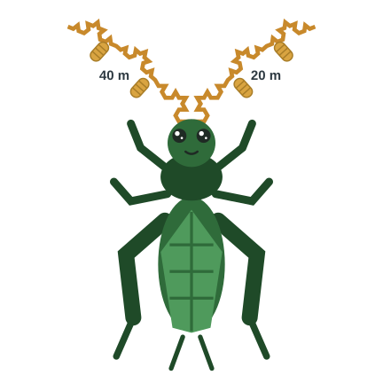
Antena multibanda con trampas
Opción «Mi antena es multibanda»: cada antena lleva sus trampas
tipo-multibanda.svg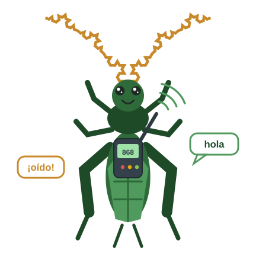
Grillo Meshtastic
Perfil «Mi nodo Meshtastic» (868 y 915 MHz)
tipo-meshtastic.svg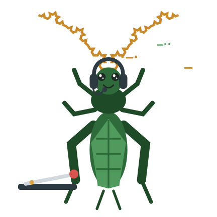
Radioaficionado
Bandas HAM: auriculares, micrófono y un manipulador de CW
tipo-radioaficionado.svg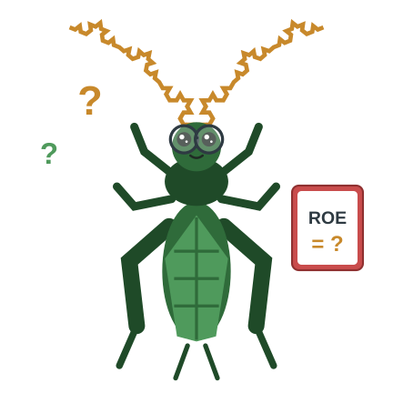
Principiante
Para quien empieza: gafas grandes y muchas preguntas
tipo-principiante.svg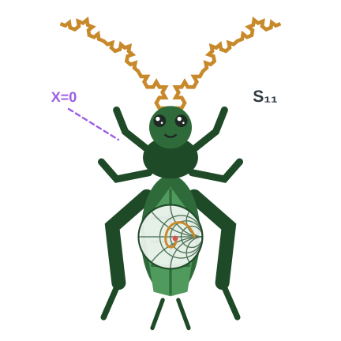
Experto en RF
Modo Avanzado: la carta de Smith en la tripa
tipo-experto.svgIdeas técnicas
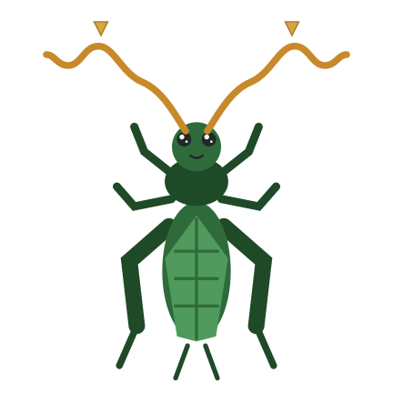
Las antenas son la curva medida
Las antenas de Koch se convierten en la curva de ROE real
tec-curva-real.svg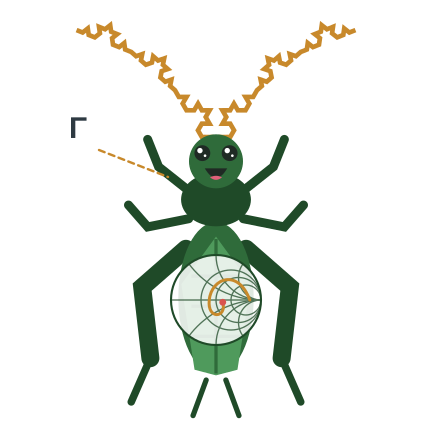
Carta de Smith
Modo Avanzado: Smith con el trazo de la antena
tec-smith.svg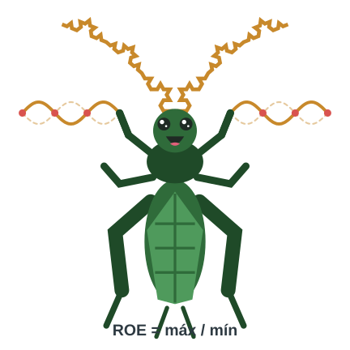
Ondas estacionarias
El origen de la ROE: dos cuerdas con nodos y vientres
tec-onda-estacionaria.svg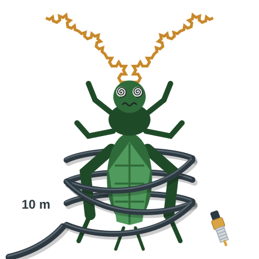
Latiguillo largo
Medir a través de un cable largo: lo enrolla varias veces
tec-latiguillo-largo.svg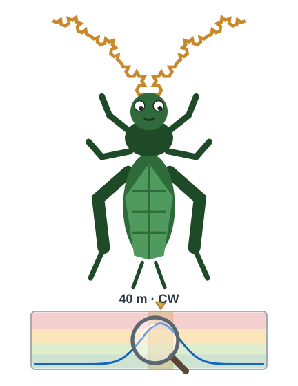
Lupa sobre la banda
Modo de segmentos HF: el grillo mira dónde está la banda (▼)
tec-lupa-banda.svg